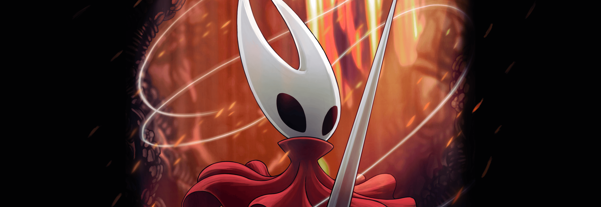

Home Story Characters

Silksong
Hollow knight Silksong is the sequel to Hollow knight, an indie game released in 2017 by a small indie studio, team cherry.
silksong was released in 2025 after a long 7 year wait. Silksong is a large game containing a captivating story and well developed Characters. Silksong is available on: steam, Xbox game pass, Playstation 4, Playstation 5 and Nintendo Switch.